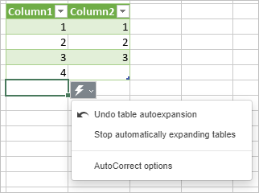
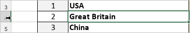
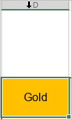
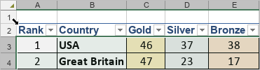
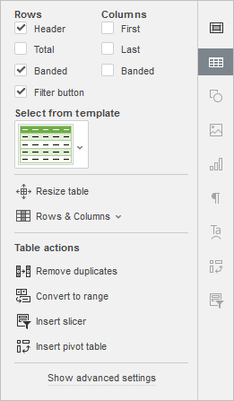
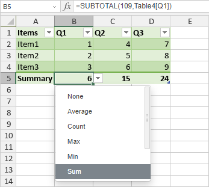
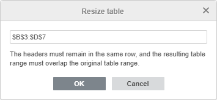
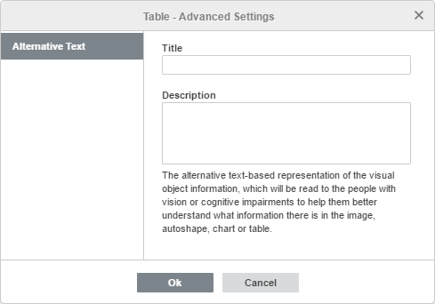
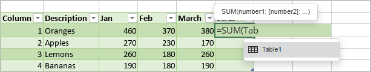
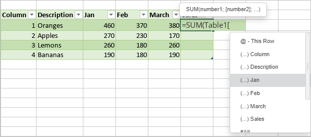

Korišćenje formatiranih tabela
Kreiranje nove formatirane tabele
Da biste lakše radili sa podacima, Uređivač tabela omogućava da primenite šablon tabele na izabrani opseg ćelija i automatski omogućite filter. Da biste to uradili,
- izaberite opseg ćelija koji želite da formatirate,
- kliknite na ikonu Formatiraj kao šablon tabele koja se nalazi na kartici Početna na gornjoj traci sa alatkama,
- izaberite željeni šablon u galeriji,
- u otvorenom iskačućem prozoru proverite opseg ćelija koji će se formatirati kao tabela,
- označite opciju Naslov ako želite da zaglavlja tabele budu uključena u izabrani opseg ćelija; u suprotnom, red zaglavlja će biti dodat na vrh, dok će izabrani opseg ćelija biti pomeren za jedan red nadole,
- kliknite na dugme OK da biste primenili izabrani šablon.
Šablon će biti primenjen na izabrani opseg ćelija i moći ćete da uređujete zaglavlja tabele i primenite filter za rad sa podacima.
Takođe je moguće ubaciti formatiranu tabelu pomoću dugmeta Tabela na kartici Umetni. U tom slučaju se primenjuje podrazumevani šablon tabele.
Napomena: kada kreirate novu formatiranu tabelu, tabeli će automatski biti dodeljeno podrazumevano ime (Table1, Table2 itd.). Ovo ime možete promeniti tako da bude smislenije i koristiti ga za dalji rad.
Ako unesete novu vrednost u ćeliju ispod poslednjeg reda tabele (ako tabela nema red Ukupno) ili u ćeliju desno od poslednje kolone tabele, formatirana tabela će se automatski proširiti tako da uključi novi red ili kolonu. Ako ne želite da proširite tabelu, kliknite na specijalno dugme Nalepi koje će se pojaviti i izaberite opciju Opozovi automatsko proširenje tabele. Kada opozovete ovu radnju, opcija Ponovi automatsko proširenje tabele biće dostupna u ovom meniju.

Napomena: Da biste omogućili/onemogućili automatsko proširenje tabele, izaberite opciju Zaustavi automatsko proširivanje tabela u meniju specijalnog dugmeta Nalepi ili idite na Napredna podešavanja -> Provera pravopisa -> Provera -> Opcije automatskog ispravljanja -> Automatsko formatiranje tokom kucanja.
Izbor redova i kolona
Da biste izabrali ceo red u formatiranoj tabeli, pomerite kursor miša preko leve ivice reda tabele dok se ne pretvori u crnu strelicu , a zatim kliknite levim tasterom miša.

Da biste izabrali celu kolonu u formatiranoj tabeli, pomerite kursor miša preko gornje ivice zaglavlja kolone dok se ne pretvori u crnu strelicu , a zatim kliknite levim tasterom miša. Ako kliknete jednom, biće izabrani podaci u koloni (kao što je prikazano na slici ispod); ako kliknete dva puta, biće izabrana cela kolona uključujući zaglavlje.

Da biste izabrali celu formatiranu tabelu, pomerite kursor miša preko gornjeg levog ugla formatirane tabele dok se ne pretvori u dijagonalnu crnu strelicu , a zatim kliknite levim tasterom miša.

Uređivanje formatiranih tabela
Neka podešavanja tabele mogu se promeniti pomoću kartice Podešavanja tabele na desnoj bočnoj traci, koja će se otvoriti ako mišem izaberete najmanje jednu ćeliju u tabeli i kliknete na ikonu Podešavanja tabele sa desne strane.

Odeljci Redovi i Kolone na vrhu omogućavaju da naglasite određene redove/kolone primenom posebnog formatiranja ili da istaknete različite redove/kolone različitim bojama pozadine kako biste ih jasno razlikovali. Dostupne su sledeće opcije:
- Zaglavlje - omogućava prikaz reda zaglavlja.
-
Ukupno - dodaje red Sažetak na dnu tabele.
Napomena: ako je ova opcija izabrana, možete izabrati i funkciju za izračunavanje vrednosti sažetka. Kada izaberete ćeliju u redu Sažetak, dugme biće dostupno desno od ćelije. Kliknite na njega i izaberite potrebnu funkciju sa liste: Average, Count, Max, Min, Sum, StdDev ili Var. Opcija More functions omogućava da otvorite prozor Umetni funkciju i izaberete bilo koju drugu funkciju. Ako izaberete opciju None, trenutno izabrana ćelija u redu Sažetak neće prikazivati vrednost sažetka za ovu kolonu.

- Naizmenično - omogućava naizmeničnu boju pozadine za neparne i parne redove.
- Dugme filtera - omogućava prikaz padajućih strelica u svakoj ćeliji reda zaglavlja. Ova opcija je dostupna samo kada je izabrana opcija Zaglavlje.
- Prva - naglašava krajnju levu kolonu u tabeli posebnim formatiranjem.
- Poslednja - naglašava krajnju desnu kolonu u tabeli posebnim formatiranjem.
- Naizmenično - omogućava naizmeničnu boju pozadine za neparne i parne kolone.
Odeljak Izaberi iz šablona omogućava da izaberete jedan od unapred definisanih stilova tabela. Svaki šablon kombinuje određene parametre formatiranja, kao što su boja pozadine, stil ivica, naizmenično bojenje redova/kolona itd. U zavisnosti od opcija označenih u odeljcima Redovi i/ili Kolone iznad, skup prikazanih šablona biće drugačiji. Na primer, ako ste označili opciju Zaglavlje u odeljku Redovi i opciju Naizmenično u odeljku Kolone, lista prikazanih šablona će uključivati samo šablone sa omogućenim redom zaglavlja i naizmeničnim kolonama:
Ako želite da uklonite trenutni stil tabele (boju pozadine, ivice itd.) bez uklanjanja same tabele, primenite šablon None sa liste šablona:
Odeljak Promeni veličinu tabele omogućava da promenite opseg ćelija na koji se primenjuje formatiranje tabele. Kliknite na dugme Izaberi podatke - otvoriće se novi iskačući prozor. Promenite vezu ka opsegu ćelija u polju za unos ili izaberite potreban opseg ćelija na radnom listu mišem i kliknite na dugme OK.
Napomena: Zaglavlja moraju ostati u istom redu, a rezultujući opseg tabele mora se preklapati sa originalnim opsegom tabele.

Odeljak Redovi i kolone omogućava da izvršite sledeće operacije:
- Izaberite red, kolonu, podatke svih kolona bez reda zaglavlja ili celu tabelu uključujući red zaglavlja.
- Umetnite novi red iznad ili ispod izabranog, kao i novu kolonu levo ili desno od izabrane.
- Obrišite red, kolonu (u zavisnosti od pozicije kursora ili izbora) ili celu tabelu.
Napomena: opcije odeljka Redovi i kolone dostupne su i iz menija desnog klika.
Opcija Ukloni duplikate može se koristiti ako želite da uklonite duplirane vrednosti iz formatirane tabele. Više detalja o uklanjanju duplikata potražite na ovoj stranici.
Opcija Pretvori u opseg može se koristiti ako želite da pretvorite tabelu u regularan opseg podataka uklanjanjem filtera, ali uz zadržavanje stila tabele (tj. boja ćelija i fonta itd.). Kada primenite ovu opciju, kartica Podešavanja tabele na desnoj bočnoj traci neće biti dostupna.
Opcija Umetni sekač koristi se za kreiranje sekača za formatiranu tabelu. Više detalja o radu sa sekačima potražite na ovoj stranici.
Opcija Umetni izvedenu tabelu koristi se za kreiranje izvedene tabele na osnovu formatirane tabele. Više detalja o radu sa izvedenim tabelama potražite na ovoj stranici.
Podešavanje naprednih podešavanja formatirane tabele
Da biste promenili napredna svojstva tabele, koristite link Prikaži napredna podešavanja na desnoj bočnoj traci. Otvoriće se prozor „Tabela - Napredna podešavanja“:

Kartica Alternativni tekst omogućava da navedete Naslov i Opis koji će biti pročitani osobama sa oštećenjem vida ili kognitivnim poteškoćama kako bi bolje razumele koje informacije tabela sadrži.
Napomena: Da biste omogućili/onemogućili automatsko proširenje tabele, idite na Napredna podešavanja -> Provera pravopisa -> Provera -> Opcije automatskog ispravljanja -> Automatsko formatiranje tokom kucanja.
Korišćenje automatskog dopunjavanja formula za dodavanje formula u formatirane tabele
Lista Automatsko dopunjavanje formula prikazuje sve dostupne opcije kada primenjujete formule na formatirane tabele. Možete dodati referencu na tabelu u formuli unutar ili van tabele. Kao reference se koriste nazivi kolona i stavki umesto adresa ćelija.
Primer ispod prikazuje referencu na tabelu u funkciji SUM.
-
Izaberite ćeliju i počnite da kucate formulu koja počinje znakom jednakosti, izaberite potrebnu funkciju sa liste Automatsko dopunjavanje formula. Nakon otvarajuće zagrade počnite da kucate naziv tabele i izaberite odgovarajući naziv sa liste Automatsko dopunjavanje formula.

-
Zatim unesite otvarajuću uglastu zagradu [ da biste otvorili padajuću listu koja sadrži kolone i stavke koje se mogu koristiti u formuli. Opis (tooltip) koji objašnjava referencu pojaviće se kada pređete pokazivačem miša preko nje na listi.

Napomena: Svaka referenca mora sadržati otvarajuću i zatvarajuću uglastu zagradu. Ne zaboravite da proverite sintaksu formule.